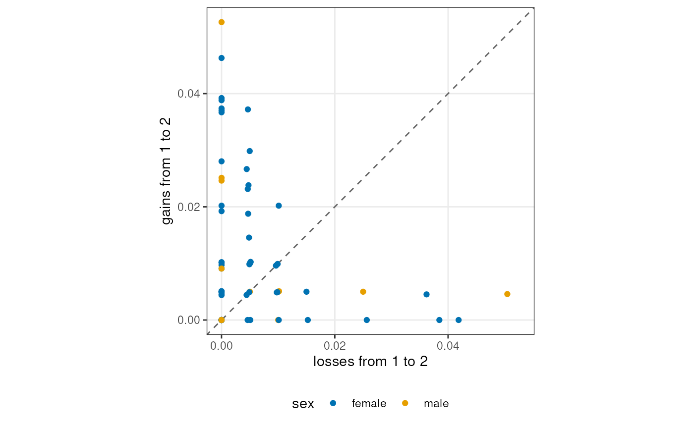

Plot losses against gains between two time points
Source:R/AllGenerics.R, R/plotTBI.R, R/zzz-mae.R
plotTBI.RdplotTBI() splits the change of each subject between two time
points into losses and gains, the components of the temporal
beta-diversity index (TBI), and draws one point per subject. Subjects
above the 1:1 line gained more than they lost.
Usage
plotTBI(x, ...)
# S4 method for class 'SummarizedExperiment'
plotTBI(
x,
time.col,
group,
time.point,
assay.type = "counts",
method = c("sorensen", "bray"),
colour.by = NULL,
...
)
# S4 method for class 'MultiAssayExperiment'
plotTBI(x, ..., experiment = 1L)Arguments
- x
a
SummarizedExperimentobject.- ...
additional arguments passed to
geom_point.- time.col
Character scalar. Specifies the column fromcolData(x)that contains sampling times: numeric,Date,POSIXctor a factor of visits.- group
Character scalar. Specifies the column fromcolData(x)that identifies subjects.- time.point
Vectorof two values oftime.col: the first and the second time point. Subjects without a sample at both are left out.- assay.type
Character scalar. Specifies the assay of abundances. (Default:"counts")- method
Character scalar. Splits the Sorensen dissimilarity of presence and absence ("sorensen") or the percentage difference (Bray-Curtis) of abundances ("bray"). (Default:"sorensen")- colour.by
Character scalar. Specifies the column fromcolData(x)that colours the points, taken from the sample at the first time point. (Default:NULL)- experiment
Character scalarorinteger scalar. For aMultiAssayExperiment, the experiment to plot; its samples get thecolDataofx. (Default:1L)
Details
For abundances \(y_1\) and \(y_2\), \(A = \sum \min(y_1, y_2)\),
losses \(B = \sum \max(y_1 - y_2, 0)\) and gains
\(C = \sum \max(y_2 - y_1, 0)\). Both axes are divided by
\(2A + B + C\), so that losses and gains add up to the dissimilarity.
With "sorensen", the abundances are presence (1) and absence (0),
and losses and gains count the features lost and gained.
"bray" needs absolute abundances, such as counts scaled by qPCR
or flow cytometry. \(B - C\) is the difference of the sample totals,
so on relative abundances losses always equal gains, and on sequencing
counts they differ only by library size.
Legendre's permutation test of subjects that changed in exceptional ways is not included.
References
Legendre P (2019). A temporal beta-diversity index to identify sites that have changed in exceptional ways in space-time surveys. Ecology and Evolution 9(6):3500-3514.
Examples
# Genera lost and gained between the first and the second sample of
# each subject
data("hitchip1006", package = "miaTime")
tse <- hitchip1006
tse$visit <- factor(ave(tse$time, tse$subject, FUN = rank))
plotTBI(tse, time.col = "visit", group = "subject",
time.point = c("1", "2"), colour.by = "sex")
#> Warning: 'group' has 929 subjects with a single sample.
